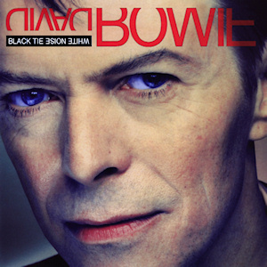
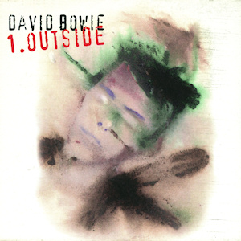
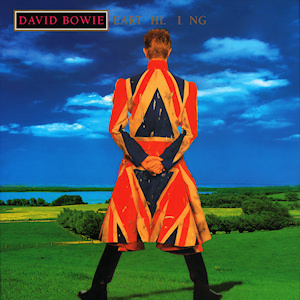
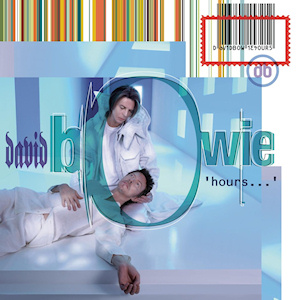

Bowie Remembered (Part Four): Married Man, Wily Obscurantist
The nineties were a time of sharp contrasts for David Bowie. After choosing to uphold a life of quiet domesticity by moving to New York City and marrying fashion model Iman, the narrative of his albums took a different turn. But it didn't take long for him to once again set himself on a path of reinvention, releasing some of his darkest, most challenging (not to mention underappreciated) work.
...
Black Tie White Noise (1993)
In the narrative of Bowie’s career, The Next Day is seen as his majestic comeback, but what about his previous one? The first solo record Bowie released after a six year gap, Black Tie White Noise hasn’t been celebrated or vilified in the years since, more overlooked. While not an entirely successful record, it is an important and transitional one, seeing him take the good points of Tin Machine – the sharp suits; guitarist Reeves Gabrels – and ditching the bad, specifically the ill-fitting reactionary ludditeness ("Pallas Athena" might not have aged well, but it did see Bowie meeting then popular music head-on), and also reuniting for one last time with Nile Rodgers and Mick Ronson.
It could also be said to be his most openly personal work. Inspired by his relationship with Iman, Black Tie White Noise sees the Bowie go so far as to share some of the music he wrote for their wedding with the world. While singles "Black Tie White Noise" and "Jump They Say" – and even the choice of covers - land their messages more effectively than anything from Never Let Me Down, as they’re entirely infused with Bowie’s lived experience. - Mark Davison
1.Outside (1995)
One of the things that we’ll struggle to explain to future generations is that there was a time when the release of a new Bowie album wasn’t a celebratory, world-stopping event. Another would be the concept of pre-millenial tension; that a mere changeover of the calendar could inspire countless books, films and, in Bowie’s case, a proposed 5 album “hyper cycle” about murder in the art world. Not that we got those five albums - 1.Outside stands apart as the sole output of Bowie’s industrial phase.
Despite it's aborted nature, however, it could be argued that 1.Outside is the centre of Bowie’s career – the one work where the most diverse aspects of rock’s most chameleonic figure come together. His early-career interest in the avant-garde and later digital soothsaying met in his tech-assisted composition methods. His rock past rubs against music that points forward to Earthling and even the abrasive jazz of Blackstar (producer Brian Eno mentioned that Bowie discussed the project again not long before his death). Even Major Tom pops in for a cameo.
Occasionally ridiculous it might be (the spoken word segues are a bit “Glass Spider”), 1.Outside is the most thrillingly nasty record in Bowie’s discography (and given his Occult-obsessions, that’s really saying something). Sometimes it’s also one of the lushest too – "Strangers When We Meet" – repurposed from 1993’s Buddha of Suburbia soundtrack – brings things to a climax, of sorts, by evoking the strung-out soul of the mid 70s. It might seem tragic that Bowie was contemplating the incomplete nature of the project right up until the end, but its enigma is a strength. 1.Outside is a mystery that will never be solved, and those are the ones that live on the longest. - Mark Davison
Earthling (1997)
David Bowie had opened albums with radical, strange sounding songs before Earthling, but while such songs –think "Station to Station" and "Beauty and the Beast" –opened quietly and built up to something surprising, "Little Wonder" plunges you right into it.
By 1997, David Bowie’s chameleonic years appeared to be behind him, and his life as a pop megastar was built largely on older works. A string of albums following "Let’s Dance" were generally more conservative and less adventurous, and even Outside had Eno’s presence, a reminder of the beloved Berlin years, to reel in fans (it didn’t work; Outside remains underappreciated). Consequently, a drum ‘n’ bass Bowie was and remains shocking, and that it began so confrontationally, with a propulsive drum machine and a grating industrial soundscape only makes it more so. With multiple bridges and heavily modulated verses, "Little Wonder" still does not sound like anything else in Bowie’s catalog.
Bowie has said that he wanted the album to be a time capsule of the end of the century, and in retrospect it is apparent that this is in fact a reason for its lukewarm reception. Bowie was quick to understand what the 21st century would be – he established an ISP and banked on the future revenue his songs would generate in the age of MP3s and streaming long before the average consumer could even conceive of it. Only now has it become apparent what the end of the 20th century was.
And Earthling sounds like it. Bowie embodies a subterranean homesick alien, to borrow a phrase from another vital time capsule from 1997, and his paranoia emerges. "Looking For Satellites" sounds almost like David Byrne at first but becomes something far more enigmatic and cosmic, as if foreseeing the surveillance that is by now infused in our daily lives (it is worth noting that Bowie was an avid Orwellian). Industrial sounds and spacy synthesizers suggest a link between capitalism and paranoia. These moods often surfaced in ways startlingly personal, as with the galvanic "Dead Man Walking", and downright frightening, as with "I’m Afraid of Americans".
Thanks to a big time assist by Trent Reznor and Brian Eno, the latter was perhaps Bowie’s best song in over a decade and was not surpassed until a few weeks ago. While some might say that’s due to Bowie’s diminished output in the latter decades of his life, "I’m Afraid of Americans" is one of Bowie’s best songs, and its portrait of a homogenized, Americanized world is only scarier nearly 20 years later.
The same is true of Earthling. Once strange and caught between a sardonic portrait of modernization and a serious warning about what’s to come, its prescience is now startling. David Bowie was always ahead of his time, but with the legend now gone, it’s time for his fans to catch up. - Forrest Cardamenis
Hours... (1999)
When a musical chameleon releases 26 studio albums over a shape-shifting career, it’s inevitable that some are going to divide opinion, and Hours… was one record that most certainly did. Pitchfork’s review was particularly scathing, describing his entire nineties discography as ‘unlistenable’, its songs as ‘sterile and unimaginative’, and ultimately coined it ‘embarrassing’. On the other hand, Allmusic recognized it as the work of a ‘masterful musician who isn’t afraid to let things develop naturally’, whilst Alternative Press went as far as to call it a masterpiece.
As was the norm by 1999, 32 years after the release of Space Oddity, Bowie’s outlandish sense of melody unfurls itself like an ivy vine, full of a natural manifestation of subtlety and semblance. Hours… was without doubt one of his more emotive works, with delicate nods to his remarkable back catalogue and his influence on modern rock making it a testimonial to his endurance, style and presence. - Carl Purvis
...
Come back tomorrow for the conclusion to our five part tribute to David Bowie, where we take a look at his final, though no less fruitful, years.
4 February, 2016 - 04:46 — No Ripcord Staff